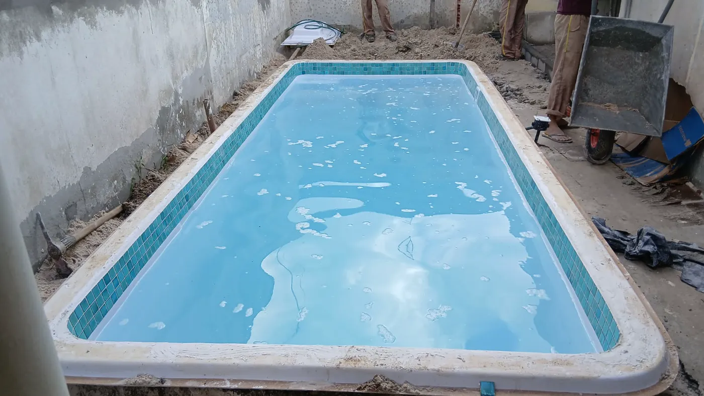

Piscinas de fibra
Modelos para diferentes espaços, com orientação para escolher a melhor opção para sua família.

Piscinas, spas e áreas de lazer em Camaçari
Quer instalar uma piscina de fibra em Camaçari? A Linha Verde ajuda você a comparar modelos, verificar medidas e organizar as informações necessárias para um orçamento. Conheça também as opções de spas e hidromassagens para espaços residenciais.
Para escolher uma piscina, é importante entender não apenas o tamanho do modelo, mas o que cabe no quintal, por onde o casco poderá entrar e quais serviços fazem parte da proposta. Enviar fotos, medidas aproximadas e informar o bairro em Camaçari ajuda a iniciar uma avaliação mais objetiva.
Modelos para diferentes espaços, com orientação para escolher a melhor opção para sua família.
Mais conforto e bem-estar para transformar sua casa em um ambiente de descanso.
Envie sua cidade, fotos do espaço e medidas aproximadas para iniciar o atendimento.
Uma escolha segura começa pela forma como você pretende usar o espaço e pelas condições reais do imóvel. Estes cuidados ajudam a comparar modelos sem depender de uma promessa de preço ou prazo antes da avaliação.
1. Tamanho do quintal e circulação. Registre comprimento e largura livres e considere o espaço ao redor da piscina, a área de passagem e os equipamentos. Um modelo compacto pode ser mais funcional que um casco maior ocupando quase todo o terreno.
2. Acesso desde a rua. Fotografe portões, corredores, garagem, muros e obstáculos. A piscina precisa caber também no trajeto de entrega. Desníveis e acessos estreitos podem exigir uma análise logística antes da escolha.
3. Condições do terreno. Drenagem, preparação da área, nivelamento e pontos hidráulicos e elétricos devem ser avaliados conforme o projeto, com profissionais habilitados quando necessário. A orientação inicial por fotos não substitui a avaliação técnica.
4. Uso residencial e equipamentos. Pense se a prioridade é convivência da família, descanso, espaço para circulação ou hidromassagem. Compare também itens como filtração, iluminação e aquecimento, verificando compatibilidade e disponibilidade.
Peça que a proposta discrimine o modelo, as dimensões, a entrega, a preparação do terreno, os equipamentos, as instalações e os acabamentos incluídos. Confirme garantias, responsabilidades e serviços adicionais. Um anúncio do casco não representa necessariamente o valor da área pronta para uso.
Informe o bairro em Camaçari, medidas aproximadas, fotos do quintal e do caminho de acesso e se existem desníveis ou regras de condomínio. A equipe poderá orientar sobre modelos e próximos passos, conforme a disponibilidade e as condições do projeto.
Registros da Linha Verde
Essas imagens do acervo da Linha Verde mostram etapas de uma instalação residencial e seu resultado. O município e o modelo não estão identificados no material; por isso, o caso é uma referência visual, não a comprovação de uma obra específica em Camaçari.

O processo envolve o espaço ao redor do casco, a circulação e os acabamentos, que precisam entrar no planejamento.

O acabamento do entorno ajuda a compreender a importância de planejar a área como um conjunto, não apenas escolher o modelo.
Continue pesquisando
Dúvidas de quem está planejando
Sim. A Linha Verde recebe pedidos de orçamento para piscinas de fibra e spas em Camaçari. A confirmação do atendimento, do transporte e da instalação depende das condições de cada projeto.
Meça a área livre e considere circulação, bordas, equipamentos e passagem para entrega do casco. Compare as dimensões do catálogo e solicite uma avaliação antes de definir o modelo.
O valor depende do modelo, da logística de transporte, do terreno, dos equipamentos e dos acabamentos. Solicite uma proposta com o que está incluído e o que será contratado separadamente.
Envie o bairro, medidas aproximadas, fotos amplas do quintal e do trajeto desde o portão. Informe também desníveis, obstáculos, regras de condomínio e opcionais desejados.
O acesso, o terreno e a infraestrutura devem ser considerados no planejamento. A necessidade de visita, estudos ou serviços técnicos especializados deve ser confirmada no escopo do atendimento.
Sim. Informe como pretende usar o espaço e compare medidas e características das alternativas. A escolha depende de espaço disponível, conforto desejado e requisitos de instalação.